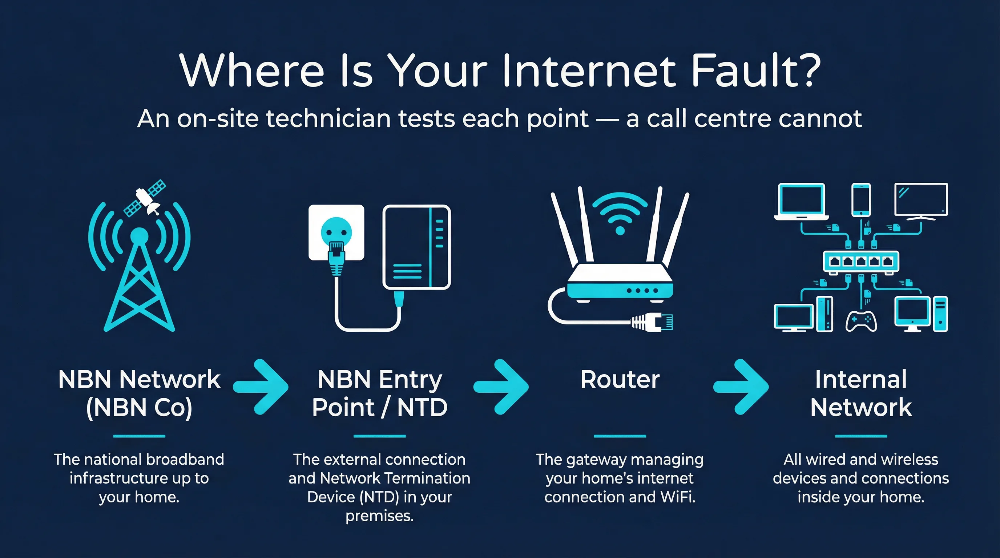
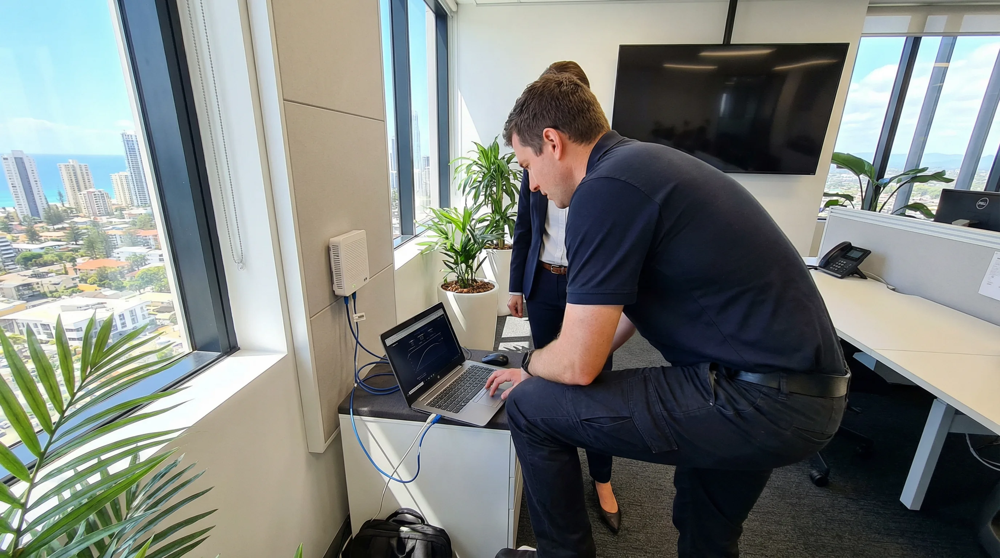

Is your Gold Coast business internet down, dropping out or running slow — and your provider’s call centre isn’t fixing it? We send a local Gold Coast technician to your premises, diagnose the issue, test your NBN connection end-to-end and liaise directly with your telco to get the problem resolved. We do the job Telstra, Aussie Broadband and On The Net can’t — actually show up.
Quick Summary
bcom ICT provides expert NBN internet support across the Gold Coast. We diagnose connection faults, configure modems, and resolve slow speed issues to keep your home or business reliably connected.
The Problem
Internet providers operate at scale. When your Gold Coast business internet goes down, you are one of thousands of fault calls they receive that day. Their support process is designed to resolve the majority of faults remotely — by walking you through a router restart, checking line status remotely and closing the ticket. When that does not work, the process slows down significantly. Escalations take time. On-site NBN technicians are scheduled days out. And throughout that process, your business is offline or running on degraded performance while you wait.
Your provider schedules an NBN technician days out, if they agree to send one at all.
A local Gold Coast technician attends your premises, often fast response or next day.
Remote line checks that may not identify the actual fault location — especially if the issue is in your internal network or router.
End-to-end on-site testing from the NBN entry point through to every device on your network.
You spend hours on hold repeating the same fault description to different agents.
We raise and escalate fault tickets with documented test evidence — on your behalf, in the language your telco’s technical team responds to.
Covers travel to your Gold Coast premises, on-site diagnosis, end-to-end connection testing, router and internal network checks, and documented fault findings. Telco liaison and escalation included where required. Additional time beyond the first hour quoted before proceeding. Call 07 3041 8993 to book or discuss your situation first.
NBN & Internet Support — Gold Coast
Gold Coast businesses dealing with slow or unreliable internet often hear the same thing from their provider: the line is fine on our end. That answer is frustrating, and it is not always wrong. But it is also not always right. The reality is that internet faults in a business premises can originate from several different points in the connection path, and a remote line check from a call centre does not tell you which one.
Understanding where the fault actually sits is the difference between a 10-minute fix and three weeks of back-and-forth with a call centre that keeps closing your ticket.
Every Gold Coast business connected to the NBN has a physical entry point on the premises — an NTD (Network Termination Device) for FTTP, FTTC and HFC connections, or a wall socket for FTTN and FTTB. The NBN Co network ends at that point. Everything from there to your router, your switches, your access points and your devices is your responsibility — and your provider’s responsibility stops at the NBN handoff.
This boundary matters because it determines who fixes what. If the signal at the NBN entry point is degraded — low sync speed, high noise margin, excessive attenuation — that is a network fault and your provider must fix it. If the signal at the entry point is fine but performance degrades between the NTD and your router, the fault is in your internal setup.
A call centre cannot test this boundary remotely. They can check line status from their end, but they cannot measure what is happening at the NTD inside your Robina or Southport office. That requires someone on-site with the right test equipment.

Where is your internet fault? An on-site technician tests each point — a call centre cannot.
When a Gold Coast business signs up with an internet provider, they typically receive a router in the mail. Telstra, Aussie Broadband, On The Net and most other providers supply a consumer-grade device — a Technicolor, Sagemcom or similar — configured for a residential household. These devices work adequately for a home with a few devices. They are not designed for an office with 15 workstations, a VoIP phone system, multiple access points and a cloud-based accounting platform all running simultaneously.
The symptoms are recognisable: the internet works fine in the morning, slows down between 10am and 2pm when everyone is online, drops out intermittently, or performs poorly for specific applications like video calls or cloud file sync. The provider runs a line check, finds nothing wrong and closes the ticket.
The router is often the actual problem. Consumer routers have limited NAT table capacity, weak QoS (Quality of Service) management and basic wireless radios. Under business load, they struggle. Replacing a telco-supplied consumer router with a business-grade device — a Ubiquiti UniFi, Cisco Meraki, Netgear Business or similar — frequently resolves performance issues that months of telco support calls could not.
We carry replacement routers and can configure a business-grade device at your Gold Coast premises on the same visit as the fault diagnosis. If your existing router is the problem, you leave with a working solution rather than another open ticket.
Configuring a business-grade router at a Gold Coast office — Surfers Paradise skyline in the background.
Office relocations and internal fit-out changes frequently require moving the internet connection point. The NBN NTD is fixed — it is installed at the point where the NBN Co technician terminated the connection, which may not be where your new reception desk, server cabinet or main workstation area is located.
We relocate internet connections within Gold Coast business premises — running a new cable from the NTD to the required location, configuring the router at the new position and testing the connection end-to-end. This is a common requirement for businesses in Broadbeach, Varsity Lakes and Helensvale that are reconfiguring their office layout without moving premises entirely.
If you are moving to a new office — particularly in a multi-tenancy building in Surfers Paradise or Southport — the NBN connection type at the new address may be different from what you currently have. FTTB is common in older Gold Coast commercial buildings, and performance can vary considerably depending on the building’s internal copper infrastructure. We can check the connection type at your new address before you move and advise on what to expect.
Our on-site technician call-out fee on the Gold Coast is $282.00 + GST for the first hour. If you want to talk through the situation before booking, call 07 3041 8993 — we can often advise whether an on-site visit is the right approach or whether there is something simpler to check first.
Our Services
We attend Gold Coast business premises to diagnose and resolve internet faults — working with your existing internet provider, not replacing them. Whether the issue is with the NBN network itself, your router configuration or your internal network, we identify the actual cause and get it resolved. This service is part of our broader telecommunications services Gold Coast offering.
Dropouts, slow speeds and connection failures at Gold Coast business premises diagnosed on-site — end-to-end testing from the NBN NTD or connection point through to your router and internal network, with documented results your provider cannot ignore.
We raise fault tickets, escalate unresolved jobs and liaise directly with your internet provider’s technical team on behalf of your Gold Coast business — cutting through the call centre process with documented evidence and technical language.
Incorrectly configured routers are one of the most common causes of poor business internet performance that the telco will not investigate. We configure your Gold Coast business router correctly — DNS, MTU, QoS and connection type settings all verified and optimised.
Formal speed testing at your Gold Coast business premises — sync speed, throughput, latency and packet loss measured and documented. Results provide the evidence base for a fault escalation or a speed tier upgrade request with your provider.
NBN connection established and router configured for your Gold Coast business — new premises, office relocation or switching providers. We handle the technical setup so your team is online from day one without the back-and-forth with a call centre.
When the internet is fine but something on your internal Gold Coast business network is causing connectivity issues — switches, access points, VLAN configuration or device-specific problems diagnosed and resolved on-site.
Fibre cable runs directly to your Gold Coast premises. Fastest and most reliable NBN connection type.
Fibre runs to a street cabinet; copper from the cabinet to your premises. Performance depends on distance from the node.
Fibre runs to your building’s communications room; internal copper from there to each tenancy. Common in Gold Coast multi-storey offices.
Fibre runs to a connection device at the street pit near your Gold Coast premises; short copper run from there to your NTD.
Uses existing Pay TV coaxial cable for the connection to your Gold Coast premises. Performance can vary with neighbourhood congestion.
NBN signal delivered via radio tower to an antenna on your Gold Coast premises. Available where fixed-line NBN connections are not viable.
Not sure what NBN connection type your Gold Coast business has? Call 07 3041 8993 — we can identify it before attending and advise on whether your connection type is likely contributing to the fault.
Why Choose Us
When you choose bcom ICT, you are partnering with a Gold Coast local business that prioritises your needs over sales targets. We provide independent advice with no vendor commissions, ensuring the solutions we recommend are genuinely the best fit for your situation. We always provide a transparent, fixed-price quote before any work begins. With 7-day availability, we are here when you need us most.
Your internet provider does not have on-site support staff for Gold Coast businesses. We do. A local technician attends your premises, tests your connection end-to-end and diagnoses the fault in person — the one thing a call centre cannot do.
We produce documented test results — sync speed, attenuation, packet loss, noise margin — that give your internet provider a specific, technical fault to act on. Vague reports of “slow internet” get deprioritised. Documented evidence with specific measurements gets escalated.
Dealing with a large telco’s technical support process is time-consuming and frustrating for a business owner. We raise the fault ticket, speak to the technical team in their language and follow up on your behalf — so you can get on with running your Gold Coast business.
NBN technician appointments through your provider can be days or weeks away. Our Gold Coast technicians are typically available fast response or next day — meaning your business internet issue gets attention immediately rather than sitting in a queue.
Service Areas
bcom ICT (ABN 92 636 893 108) provides on-site NBN and internet fault support to businesses across the Gold Coast — Southport, Robina, Burleigh Heads, Nerang, Helensvale, Coomera and Varsity Lakes. We work with all major internet providers including Telstra, Aussie Broadband, On The Net, iiNet, TPG and others. We do not replace your internet provider — we attend on-site to diagnose and resolve the issues your provider cannot fix remotely. Call 07 3041 8993 to book an on-site technician or discuss your situation first.
What to Expect
Here is what happens from your call to a diagnosed and documented internet fault — and a resolution your telco can act on.
Call 07 3041 8993 and tell us what is happening — dropouts, slow speeds, complete outage, intermittent connection or a specific time-of-day pattern. Tell us your internet provider and your NBN connection type if you know it. We advise whether an on-site visit is the right approach or whether there is something you can check first.
A local Gold Coast technician arrives at your business premises — typically fast response or next day. We start at the NBN connection point and work through the full signal path to your router and internal network. No time wasted on remote reboot suggestions you have already tried.
We test sync speed, throughput, latency, packet loss, signal levels and noise margin — measuring the connection at each point in the path to identify exactly where the fault is. Results are documented with specific measurements rather than general observations.
If the fault is with the NBN network or your provider’s infrastructure, we raise the fault ticket with your provider directly — including documented test results that their technical team can act on. We follow up the escalation and keep your Gold Coast business updated until the issue is resolved.
On-site visits typically available fast response or next day on the Gold Coast. Call 07 3041 8993 — do not spend another day on hold.
Real-World Example — Gold Coast
To make this concrete, here is a scenario that reflects the kind of call we receive regularly. A small professional services business in Nerang — an accounting practice with eight staff — has been experiencing slow internet for six weeks. They are on a 100/20 NBN plan with a major provider. The provider has run remote checks twice, found nothing wrong and closed both tickets. The business owner has spent approximately four hours on hold across three separate calls.
The symptoms are specific: speeds are fine before 9am, degrade noticeably between 9am and 5pm, and video calls drop out regularly during the afternoon. File uploads to their cloud accounting platform take noticeably longer than they did six months ago.
A technician attends the premises. The first test is at the NBN NTD — a direct speed test bypassing the router entirely. Sync speed is 98/18, which is normal for a 100/20 plan. The NBN signal is clean. The fault is not with the NBN network.
The router is a consumer device supplied by the provider. A quick check of the router’s admin panel shows it has been running continuously for 214 days without a reboot. The NAT table is at 89% capacity. There are 47 active connections — workstations, phones, a printer, two access points and several staff members’ personal mobile devices. The router’s CPU is running at 94% during business hours.
The router is the problem. It is not faulty in the traditional sense — it has not failed. It is simply undersized for the load being placed on it.

On-site NBN connection testing at a Gold Coast business — testing at the NTD before the router.
The consumer router is replaced with a business-grade device on the same visit. The new router is configured with the correct connection type settings, DNS servers, QoS rules to prioritise VoIP and video conferencing traffic, and a guest network for personal devices separated from the business network. The access points are reconfigured to connect to the new router.
A speed test after the replacement shows 97/19 — close to the full plan speed — during peak business hours. The video call dropout issue is resolved. The cloud accounting platform performs as expected.
The provider’s line was fine all along. The fault was in the equipment they supplied.
This scenario plays out regularly in offices across the Gold Coast — in Coomera, Coolangatta, Burleigh Heads and everywhere in between. The provider’s support process is not designed to diagnose equipment performance under business load. Their remote checks confirm the line is active and syncing. They do not check whether the router they supplied is capable of handling the number of devices and the type of traffic your business generates.
An on-site technician can see what a remote check cannot. The router’s admin panel, the NAT table, the CPU load, the QoS settings, the number of connected devices — these are only visible from inside the network. A call centre agent working from a remote diagnostic tool has none of this information.
Not every fault is in the customer’s equipment. We also attend premises where the NBN signal at the entry point is genuinely degraded — low downstream sync on an FTTN connection, high noise margin on a copper run, or intermittent signal on an HFC connection. In these cases, the fault is with the NBN Co network or the provider’s infrastructure, and the provider is responsible for fixing it.
The difference between a business getting this resolved quickly and a business spending weeks on hold is documentation. A provider’s technical team responds to specific measurements — “downstream sync speed is 22 Mbps on a 100 Mbps plan, noise margin is 18 dB above threshold at the NTD” — rather than a customer reporting that the internet is slow. We produce that documentation on-site and raise the fault ticket with the specific evidence attached.
Businesses in Helensvale and Nerang on FTTN connections are particularly affected by this issue, as performance on copper-based connections can degrade over time and is sensitive to environmental factors including heat and moisture — both of which are relevant on the Gold Coast.
If your Gold Coast business internet has been slow, dropping out or failing for more than a few days and your provider has not resolved it, an on-site visit is the most direct path to a diagnosis. Call 07 3041 8993 and describe what is happening — we will advise whether an on-site visit is the right approach and what to expect from the process.
Frequently Asked Questions
Yes — and this is one of the most common reasons Gold Coast businesses call us. Internet providers will sometimes attribute a fault to “customer equipment” or “internal wiring” to avoid dispatching an NBN technician. We test your connection at the NBN NTD or entry point — before your router — to establish whether the fault is with the NBN network itself or with your internal setup. If the NBN signal is degraded at the entry point, the fault is on your provider’s side and we document that with specific measurements. If the fault is in your internal network or router, we identify and fix that on the same visit. Call 07 3041 8993 to book an on-site assessment.
The call-out fee is $282.00 + GST for a one-hour on-site technician visit at your Gold Coast business premises. This covers travel, on-site diagnosis, end-to-end connection testing, router and internal network checks, documented fault findings and telco liaison where required. If the job takes longer than one hour we quote additional time before proceeding. Call 07 3041 8993 to discuss your situation before booking if you want to confirm the scope first.
Yes. We work with all major internet providers used by Gold Coast businesses — including Telstra, Aussie Broadband, On The Net, iiNet, TPG and others. We do not replace your provider or change your internet plan. We attend on-site to diagnose the fault, document the evidence and liaise with your existing provider’s technical team to get the issue resolved. You keep your current provider — we give them something specific to act on. Call 07 3041 8993 and tell us who your provider is — we will confirm we can work with them before booking.
Often yes. Persistent slow speeds that your provider dismisses as “within normal parameters” frequently have a diagnosable cause — line attenuation above acceptable levels, noise on the copper, a misconfigured router, a congested switch or an internal network issue. We measure your sync speed and throughput formally and compare it against what your plan and connection type should deliver. If there is a genuine fault we document it in a way your provider must respond to. If your speeds are genuinely within spec for your connection type and location, we will tell you that honestly and advise whether a plan or provider change is worth considering. Call 07 3041 8993 to discuss your Gold Coast business internet situation.
Yes. We configure your NBN connection and router at a new Gold Coast business premises — whether you are a new business, moving offices or switching internet providers. We handle the technical setup including router configuration, internal network connection and testing to confirm you are getting the speeds your plan should deliver. We can also advise on the right plan and provider for your premises based on the NBN connection type available at your new address. Call 07 3041 8993 with your move date and new address and we will advise what to expect.
Gold Coast’s Trusted Telecommunications Team
NBN and internet fault support for Gold Coast businesses — on-site diagnosis, end-to-end testing, documented evidence and direct telco liaison. We do the job your internet provider can’t — actually show up.
Last updated: March 2026